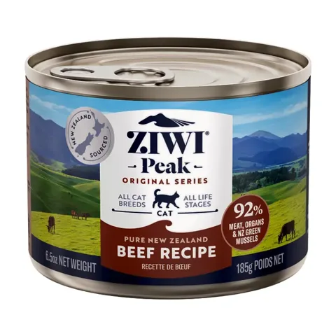

ZIWI Peak
ZIWI Peak 貓罐頭
全齡配方（含幼貓）・6 種口味・85g／185g 罐
比歷史低價高 12%
90 天價格水準：偏高（最低 €2.05/100g ～ 最高 €2.30/100g，依過去 19 天每日最低價）
商店報價（依每單位價排序）
| 店家 | 規格 | 總價 | 每單位價 | 條件 | 購買 |
|---|---|---|---|---|---|
| Petfooddiscount.nl | 1x185g 牛肉／鯖魚 | €4.25 | €2.30/100g | 運費 €4.95 2026-11-28 live browser：牛肉／鯖魚 1x185g €4.25（建議價 €4.40），價格不變，有貨；10–23 罐 €3.95、24 罐以上 €3.79；免運 €49。 | 前往 → |
| bestpetfoods | 1x185g 雞肉／牛肉 | €4.25 | €2.30/100g | €50 起免運；未達門檻 €5.95；15:00 前下單隔天到 經 YesCashback 返現 €0.15 缺貨 2026-11-28 live browser：雞肉／牛肉 1x185g €4.40，價格不變，仍缺貨「Jammer! Dit product is niet op voorraad」；訂閱 €4.18（-5%）；免運 €50，否則 €5.95。Ziwi Box 試吃組三款皆 €36.30（原 €41.30），皆缺貨；站頂橫幅僅稱 Black Friday 送貨繁忙。 | 前往 → |
| Petfooddiscount.nl | 1x185g 雞肉 | €4.25 | €2.30/100g | 運費 €4.95 缺貨 2026-11-28 live browser：雞肉 1x185g €4.25（建議價 €4.40），今日首次單獨記錄；缺貨「Dit product is tijdelijk niet verkrijgbaar」；10–23 罐 €3.95、24 罐以上 €3.79；免運 €49。 | 前往 → |
| Hondjekoek | 1x185g 牛肉／雞肉 | €4.10 | €2.22/100g | €59 起免運 沿用 2026-11-11 報價 2026-11-11 重新抓取（結構化資料）；較上次 11-07：同；運費／促銷欄沿用上次未重核 | 前往 → |
| Catsclusive | 12x185g 雞肉／牛肉 | €51.99 | €2.34/100g | €65 起免運 沿用 2026-11-07 報價 2026-11-07 WebFetch 讀取（curl 失敗）；鹿肉 12x185g €59.99 | 前往 → |
| Catsclusive | 24x85g 雞肉／鯖魚羊肉／鯖魚／牛肉 | €64.80 | €3.18/100g | €65 起免運 沿用 2026-11-07 報價 2026-11-07 WebFetch 讀取；鹿肉 24x85g €85.99 | 前往 → |
| Hondjekoek | 1x85g 雞肉 | €2.80 | €3.29/100g | 免運 €59 起 沿用 2026-11-11 報價 2026-11-11 重新抓取（結構化資料）；較上次 11-07：同；運費／促銷欄沿用上次未重核 | 前往 → |
| Hondjekoek | 1x85g 牛肉 | €2.80 | €3.29/100g | 免運 €59 起 沿用 2026-11-11 報價 2026-11-11 重新抓取（結構化資料）；較上次 11-07：同；運費／促銷欄沿用上次未重核 | 前往 → |
| Cool4pets.be | 1x185g 雞肉 | €4.10 | €2.22/100g | 寄 NL €4.95，€59 起免運 沿用 2026-11-15 報價 未核實 2026-11-15 curl 重抓頁面，確認頁面仍含上次價格字串（未逐變體結構化解析、庫存／運費／促銷沿用 11-13）；價格視為同 11-13；返現率沿用（ShopBuddies zooplus 1.33%/新客8%、Medpets 4%、Brekz 3.5%、YesCashback bestpetfoods 4% 今日重查未變；CashbackXL 頁為 JS 未能讀取＝未確認） | 前往 → |
| Medpets | 12x185g 雞肉 | €49.95 | €2.25/100g | 運費未知 沿用 2026-11-16 報價 缺貨 2026-11-16 browser.open：12x185g 雞肉 €49.95，價格不變（前次 2026-11-15 €49.95），現為 OutOfStock 缺貨（結構化資料） | 前往 → |
| CutieCat | 1x185g 牛肉 | €4.40 | €2.38/100g | 見商店 沿用 2026-11-15 報價 未核實 2026-11-15 curl 重抓頁面，確認頁面仍含上次價格字串（未逐變體結構化解析、庫存／運費／促銷沿用 11-13）；價格視為同 11-13；返現率沿用（ShopBuddies zooplus 1.33%/新客8%、Medpets 4%、Brekz 3.5%、YesCashback bestpetfoods 4% 今日重查未變；CashbackXL 頁為 JS 未能讀取＝未確認） | 前往 → |
| ZIWI Petfoods España | Beef cat can 185g | €4.40 | €2.38/100g | 運費未知 沿用 2026-11-07 報價 缺貨 不是更低；頁首西班牙免運條件不能套NL | 前往 → |
| Naturitas.nl | Beef cat wet 185g | €5.28 | €2.85/100g | 運費未知 沿用 2026-11-07 報價 未核實 商品頁有貨；10罐€5.02/罐，仍不低於舊€3.79；NL站不等於已核本品寄Rotterdam運費 | 前往 → |
| Cool4pets.be | 1x85g 牛肉 | €2.80 | €3.29/100g | 運費 €4.95 沿用 2026-11-15 報價 未核實 2026-11-15 curl 重抓頁面，確認頁面仍含上次價格字串（未逐變體結構化解析、庫存／運費／促銷沿用 11-13）；價格視為同 11-13；返現率沿用（ShopBuddies zooplus 1.33%/新客8%、Medpets 4%、Brekz 3.5%、YesCashback bestpetfoods 4% 今日重查未變；CashbackXL 頁為 JS 未能讀取＝未確認） | 前往 → |
| Cool4pets.be | 1x85g 雞肉 | €2.80 | €3.29/100g | 見商店 沿用 2026-11-15 報價 未核實 2026-11-15 curl 重抓頁面，確認頁面仍含上次價格字串（未逐變體結構化解析、庫存／運費／促銷沿用 11-13）；價格視為同 11-13；返現率沿用（ShopBuddies zooplus 1.33%/新客8%、Medpets 4%、Brekz 3.5%、YesCashback bestpetfoods 4% 今日重查未變；CashbackXL 頁為 JS 未能讀取＝未確認） | 前往 → |
| Medpets | 24x85g 牛肉 | €69.95 | €3.43/100g | 運費未知 沿用 2026-11-16 報價 未核實 2026-11-16 browser.open：同頁另一規格 24x85g 牛肉 €69.95，價格不變（前次 2026-11-15 €69.95），標示今天下單明天到貨 | 前往 → |
| CutieCat | 1x85g 牛肉 | €2.95 | €3.47/100g | 見商店 沿用 2026-11-15 報價 未核實 2026-11-15 curl 重抓頁面，確認頁面仍含上次價格字串（未逐變體結構化解析、庫存／運費／促銷沿用 11-13）；價格視為同 11-13；返現率沿用（ShopBuddies zooplus 1.33%/新客8%、Medpets 4%、Brekz 3.5%、YesCashback bestpetfoods 4% 今日重查未變；CashbackXL 頁為 JS 未能讀取＝未確認） | 前往 → |